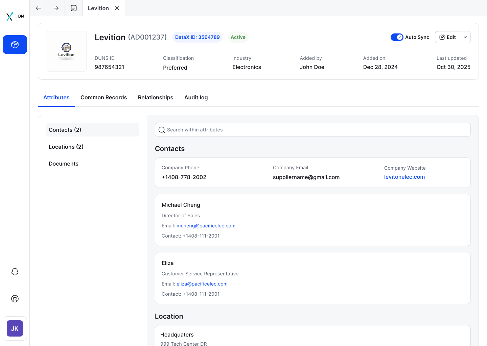

The launchpad
for everything.
Before a user can merge or split a supplier, they need to understand it fully. Tab architecture separates concerns, each tab has one job. The header strip surfaces status and Auto Sync state before any scrolling. Inline editing keeps users in context, no modal, no lost place.

SM-01 · LAUNCHPAD
Supplier Details, Attributes tab, full view

SM-02 · INLINE EDIT
Edit state, inline form, Cancel/Confirm always visible